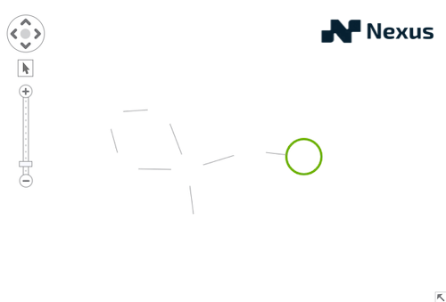
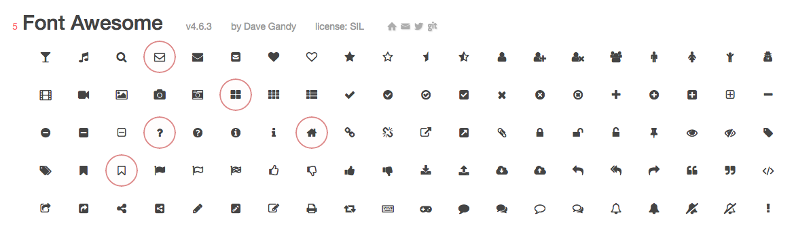

Fonts and Font Icons
Introduction#
Nexus lets you use custom fonts to match the fonts used in your applications. In addition, you can also add font icons to various items in the chart.
Using fonts#
Nexus uses 'sans-serif' as the default font family. To set a custom default font family, pass the name in the fontFamily chart option.
To set a font family for a chart item such as a node, link, label or a glyph,
you can also set the ff property of the item.
Using font icons#
While images offer you more reliable cross-browser support, font icons offers better scalability and let you change the font icon colour dynamically.
Adding font icons#
To add a font icon, pass the Unicode value to the t property of the fi property of the node or glyph. You can use GraphNexus.getFontIcon() to look up a Unicode value from a class name.
For example, using Font Awesome, a font icon on a node would look like this:
{ id: '1', type: 'node', fi: { t: GraphNexus.getFontIcon('fa-user') }}Unless a font family is explicitly set on the item via the ff property, the icon will be rendered from the family specified in the IconFontFamily option.
Custom font families#
Follow these steps to use custom font families in Nexus:
- Download and reference the TypeKit WebFontLoader or link to it directly:
- Update your application's CSS with
@font-facerules to load your chosen fonts. For example, to load Muli Bold, use: - Make sure your browsers can access the custom font files.
- Use the TypeKit WebFontLoader to load fonts.
- Create the Nexus component and include the custom font family:
<script src="js/webfontloader.js" type="text/javascript"></script>
@font-face {
font-family: 'Muli';
font-style: normal;
font-weight: bold;
src: local('Muli-Bold.ttf'), url('path/to/fonts/Muli/Muli-Bold.ttf');
}// At the end of the page or on DOM ready
(function(){
WebFont.load({
custom: {
families: ['Muli']
},
// Make sure to start Nexus in either case
active: startNexusGraph,
inactive: startNexusGraph
});
})();
function startNexusGraph(){
GraphNexus.create({ container: 'kl' }, afterCreation);
}Font weights and Font Awesome 5#
Some font icon libraries, including Font Awesome 5, use font weights to provide variant styles for icons, such as regular () and solid ().
To use multiple font styles in Nexus, you must ensure that there is a unique font family declaration for each desired style. There are two ways you can achieve this:
-
Modify the library CSS file so that each weighted font declaration has a unique font family name.
For example, in Font Awesome, you can modify font-awesome.css so that the
@font-facedeclaration for 'Font Awesome 5 Free' becomes 'Font Awesome 5 Free Regular', and so on for each style you wish to support. For example, font-awesome.css edited this way looks like this:@font-face { font-family: 'Font Awesome 5 Free Regular'; /* ... */ } .far { font-family: 'Font Awesome 5 Free Regular'; font-weight: 400; } @font-face { font-family: 'Font Awesome 5 Free Solid'; /* ... */ } .fa, .fas { font-family: 'Font Awesome 5 Free Solid'; font-weight: 900; } Create your own font family definitions in your application page and set them to use the font library's source files. For example, in Font Awesome 5, you might declare a 'solid' font family like this:
@font-face { font-family: 'Font Awesome 5 Free Solid'; font-weight: 900; src: url("path/to/fonts/fontAwesome5/fa-solid-900.eot"); /* Import backward compatibility fonts as required */ }
Set the default font icon style by setting iconFontFamily:
chart.options({ iconFontFamily: 'Font Awesome 5 Free Regular' });For any icons using alternative styles,
set the ff property on the fi object declaration.
The item should look like this:
{ id: '1', type: 'node', fi: { t: GraphNexus.getFontIcon('fa-user'), ff: 'Font Awesome 5 Free Solid' } }Troubleshooting#
This section offers help with some of the most common issues with using fonts and font icons.
Cannot access fonts and font icons from another domain#
When loaded from a different domain to your app, fonts and font icons can fail to appear in your chart or in the screenshots taken with chart.toDataURL(). This is due to the CORS restrictions. See the Cross-Origin Images (CORS) page for mode details.
Font icons missing in the chart#
If you are not seeing the Font Icons any more in your chart, there's probably an issue with the font loader. An example of the issue can be seen in the following image:

Follow these steps to fix the issue:
- Download and reference the TypeKit WebFontLoader or link to it directly:
- Include the CSS file with the font icons in the page, for example, for Font Awesome:
- Ensure the font files are reachable from the browser.
- Load the fonts with the TypeKit WebFontLoader before creating the Nexus component, as shown below:
<script src="js/webfontloader.js" type="text/javascript"></script><link rel="stylesheet" type="text/css" href="css/font-awesome.css">// At the end of the page or on DOM ready
(function(){
WebFont.load({
custom: {
// Using the FontAwesome files in this example
families: ['FontAwesome']
},
// Make sure to start Nexus in either case
active: startNexusGraph,
inactive: startNexusGraph
});
})();
function startNexusGraph(){
GraphNexus.create({ container: 'kl' }, afterCreation);
}WebFontLoader failing to load fonts#
WebFontLoader can sometimes fail to load a font family and trigger the inactive event handler even though the font has been downloaded. This can occur with Font Awesome 5 on Microsoft Edge.
The solution is to change the test string which the WebFontLoader uses to determine whether a font has loaded. For example:
(function(){
WebFont.load({
custom: {
families: ['Font Awesome 5 Pro'],
// Specify the test string to use to check whether the font has loaded
testString: {
// Be sure to provide a unicode character which exists in the font library
'Font Awesome 5 Pro': '\f188'
}
},
active: startNexusGraph,
inactive: startNexusGraph,
timeout: 3000
})();
});See the Custom section of the WebFontLoader documentation for more details about test strings.
Font families with whitespace and number in name not rendering correctly#
If you use a font family whose name contains a whitespace and ends in a number, e.g. "Exo 2" or "Goudy Bookletter 1911", the text may not render correctly in the chart. This is due to certain CSS restrictions on acceptable characters and identifiers.
In addition to quoting the font family name, you also need to do one of the following:
// solution 1 - escape the whitespace before the number
{ id: 'n2', type: 'node', c: '#43976C', t: 'Text', fs: 14, ff: 'Exo\\ 2' }
// solution 2 - wrap the font family name into additional set of quotes
{ id: 'n2', type: 'node', c: '#43976C', t: 'Text', fs: 14, ff: "'Exo 2'" } Font icons aren't rendering correctly#
JavaScript strings use UTF-16 encoding. However, some icons may require 2 UTF-16 characters to be correctly identified. Similarly, some font families such as the Material Design family may be using Unicode code points with characters encoded as surrogate pairs.
In these cases, it's not possible to use GraphNexus.getFontIcon(). Instead, you need to add the icon by
specifying the multi-byte Unicode string directly:
{ id: '1', type: 'node', fi: { t: '\\u{F01E5}', ff: 'Material Design Icons' } }You can find the Unicode strings for the font icons in the font family CSS file.
Slow loading performance#
If you think that font loading is taking longer than expected, you can tweak the timeout limit of the WebFontLoader. For example:
// At the end of the page or on DOM ready
(function(){
WebFont.load({
custom: {
families: ['FontAwesome']
},
// Make sure to start Nexus in either case
active: startNexusGraph,
inactive: startNexusGraph,
// Do not wait more than 3 seconds to load
timeout: 3000
})();
});Slow loading performance when using multiple font families#
It can take a long time to load font icons from multiple font families. To improve performance, you can create a single font family containing the font icons you want to use. Loading a single family uses less bandwidth and avoids slow-running charts.
There are online tools available to help you create a custom font family. To create one using the Fontello icon fonts generator:
- From the Fontello homepage, select the icons you want to add to your font family:
- To add your own SVG font icons, drag them to the Custom Icons section near the top of the page.
- When you're done, click
- Update your application’s CSS file to include the custom font family.

You can now use the custom font family in your application.